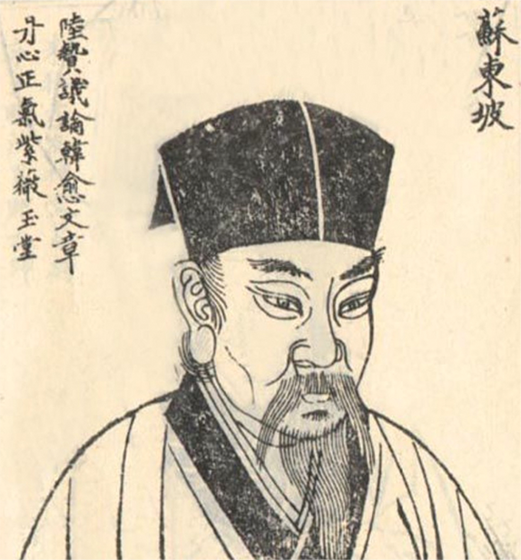
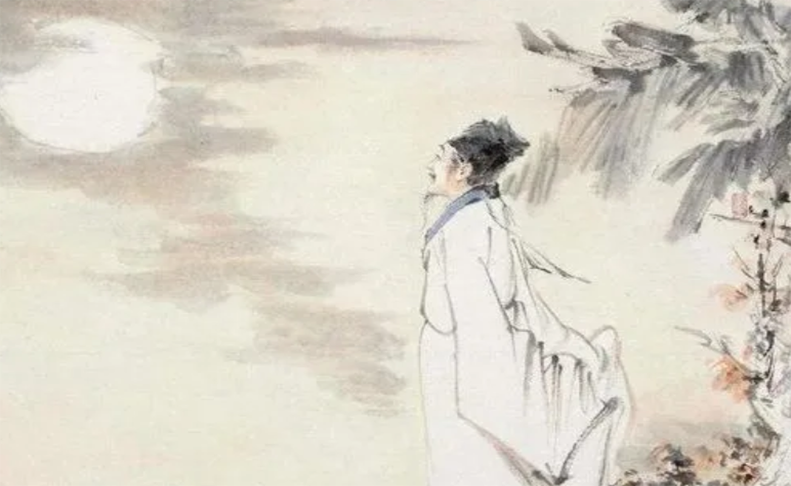
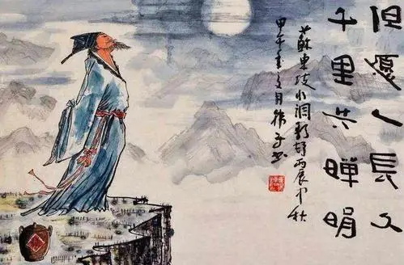
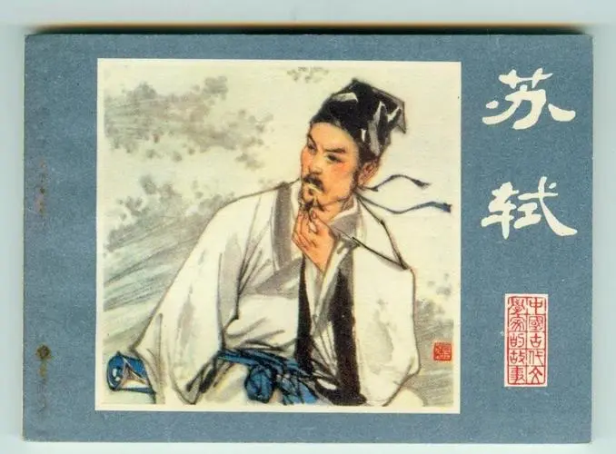
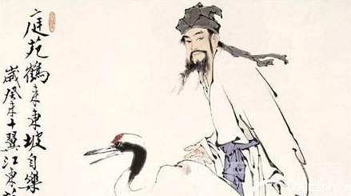
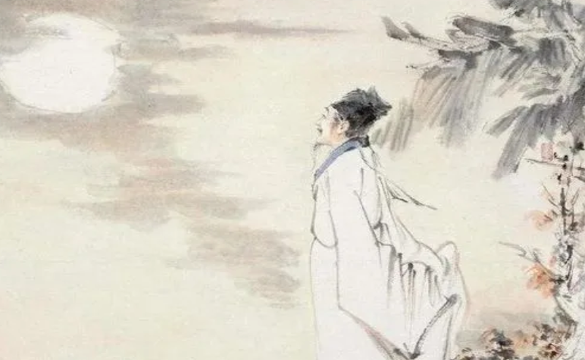
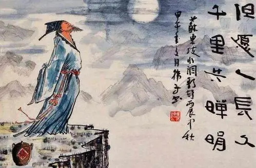
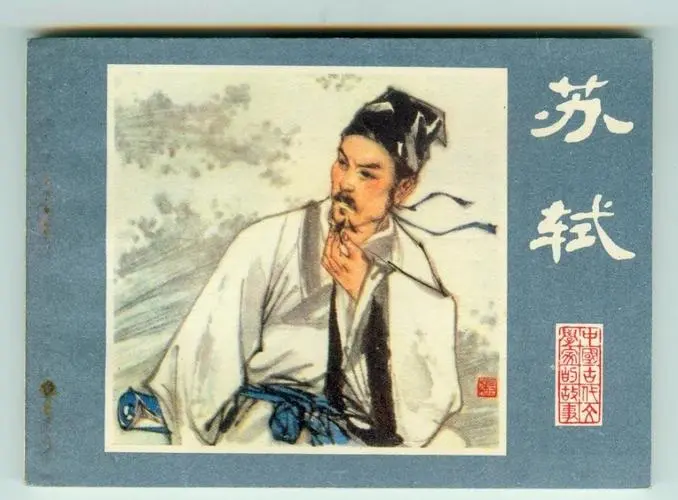
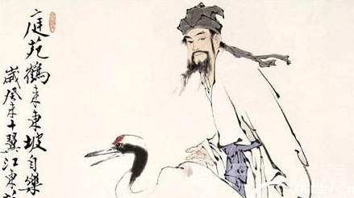

苏轼
（北宋文学家、书画家）
苏轼（1037年1月8日—1101年8月24日），字子瞻，一字和仲，号铁冠道人、东坡居士，世称苏东坡、苏仙 [1-3] 、坡仙 [91] ，汉族，眉州眉山（今四川省眉山市）人，祖籍河北栾城，北宋文学家、书法家、美食家、画家，历史治水名人。
嘉祐二年（1057年），苏轼进士及第。宋神宗时在凤翔、杭州、密州、徐州、湖州等地任职。元丰三年（1080年），因“乌台诗案”被贬为黄州团练副使。宋哲宗即位后任翰林学士、侍读学士、礼部尚书等职，并出知杭州、颍州、扬州、定州等地，晚年因新党执政被贬惠州、儋州。宋徽宗时获大赦北还，途中于常州病逝。宋高宗时追赠太师；宋孝宗时追谥“文忠”。
苏轼是北宋中期文坛领袖，在诗、词、散文、书、画等方面取得很高成就。文纵横恣肆；诗题材广阔，清新豪健，善用夸张比喻，独具风格，与黄庭坚并称“苏黄”；词开豪放一派，与辛弃疾同是豪放派代表，并称“苏辛” [5] ；散文著述宏富，豪放自如，与欧阳修并称“欧苏”，为“唐宋八大家”之一。苏轼善书，“宋四家”之一；擅长文人画，尤擅墨竹、怪石、枯木等。李志敏评价：“苏轼是全才式的艺术巨匠。”
嘉祐二年（1057年），苏轼进士及第。宋神宗时在凤翔、杭州、密州、徐州、湖州等地任职。元丰三年（1080年），因“乌台诗案”被贬为黄州团练副使。宋哲宗即位后任翰林学士、侍读学士、礼部尚书等职，并出知杭州、颍州、扬州、定州等地，晚年因新党执政被贬惠州、儋州。宋徽宗时获大赦北还，途中于常州病逝。宋高宗时追赠太师；宋孝宗时追谥“文忠”。
苏轼是北宋中期文坛领袖，在诗、词、散文、书、画等方面取得很高成就。文纵横恣肆；诗题材广阔，清新豪健，善用夸张比喻，独具风格，与黄庭坚并称“苏黄”；词开豪放一派，与辛弃疾同是豪放派代表，并称“苏辛” [5] ；散文著述宏富，豪放自如，与欧阳修并称“欧苏”，为“唐宋八大家”之一。苏轼善书，“宋四家”之一；擅长文人画，尤擅墨竹、怪石、枯木等。李志敏评价：“苏轼是全才式的艺术巨匠。”

个人作品
轶事典故
应考趣闻
宋仁宗嘉佑二年，苏轼以一篇《刑赏忠厚之至论》的论文得到考官梅尧臣的赏识，并推荐给主试官欧阳修。欧阳修亦十分赞赏，欲拔擢为第一，但又怕该文为自己的门生曾巩所作，为了避嫌，列为第二。结果试卷拆封后才发现该文为苏轼所作。到了礼部复试时，苏轼再以《春秋对义》取为第一。
关于《刑赏忠厚之至论》中的内容：“皋陶曰杀之三，尧曰宥之三”，当时考官皆不知其典故，欧阳脩问苏轼出于何典。苏轼回答在《三国志·孔融传》中。欧阳修翻查后仍找不到，苏轼答：“曹操灭袁绍，以绍子袁熙妻甄宓赐子曹丕。孔融云：‘即周武王伐纣以妲己赐周公’。操惊，问出于何典，融答：‘以今度之，想当然耳’。”欧阳修听毕恍然大悟。
建筑苏堤
“东坡处处筑苏堤”，苏轼一生筑过多条长堤。北宋熙宁十年（公元1077年）秋，徐州大水围城。苏轼通知大家“备畚锸，蓄土石，积刍茭”，同时急调5000人加固城基、高筑城墙。苏轼在水情严峻的城南，组织徐州军民修筑了一条防洪长堤。《宋史·苏轼传》记载：苏轼“率其徒持畚锸以出，筑东南长堤，首起戏马台，尾属于城”，明嘉靖《徐州志·山川·苏堤》：“宋苏轼守徐时，河决为患，因筑以障城，自城属于台，长二里许，民赖以全，活着众，今尚存。”徐人至今思焉。 [68] 北宋元祐四年(1089)，诗人苏轼（苏东坡）任杭州知州，由于西湖长期没有疏浚，淤塞过半，“崶台平湖久芜漫，人经丰岁尚凋疏”，湖水逐渐干涸，湖中长满野草，严重影响了农业生产。苏轼来杭州的第二年率众疏浚西湖，动用民工二十余万，开除葑田，恢复旧观，并在湖水最深处建立三塔（今三潭映月）作为标志。他把挖出的淤泥集中起来，筑成一条纵贯西湖的长堤，堤有六桥相接，以便行人，后人名之曰“苏公堤”，简称“苏堤”。元祐六年(1091)苏轼被贬颍州（今安徽阜阳）时，对颍州西湖也进行了疏浚，并筑堤。绍圣元年（1094年），苏轼被贬为远宁军节度副使、惠州（今广东惠城区 [93] ）安置。年近六旬的苏轼，日夜奔驰，千里迢迢赴贬所，受到了岭南百姓热情的欢迎。苏轼把皇帝赏赐的黄金拿出来，捐助疏浚西湖，并修了一条长堤。为此，“父老喜云集，箪壶无空携，三日饮不散，杀尽村西鸡”，人们欢庆不已。
南北不二
晚唐五代以来，文人对《坛经》的阅读和接受更为普遍与深入。据《坛经》记载，惠能初见五祖弘忍时，弘忍大师说：“汝是岭南人，又是獦獠，若为堪作佛？”惠能答道：“人虽有南北，佛性本无南北，獦獠身与和尚不同，佛性有何差别？”苏轼接受了这种“南北不二”的观念，并在《闻潮阳吴子野出家》一诗中表达了“当为狮子吼，佛法无南北”的思想。在此诗之前，他在《送小本禅师赴法云》中也曾有“是身如浮云，安得限南北”的说法。在“南北不二”观念的影响下，苏轼逐渐将南北融为一体，这在他的诗歌中多有表露，如“人间底处有南北，纷纷鸿雁何曾冥”、“片云会得无心否，南北东西只一天”。既然“南北”本无分别，那么随心适意的生活状态便成了苏轼的人生追求，所谓“我行无南北，适意乃所祈”。《定风波·常羡人间琢玉郎》进一步展现了他的这种思想：“试问岭南应不好？却道，此心安处是吾乡。”心安之所，便是故乡。南北融合的思想观念以及“随缘自娱”的生活心态，对苏轼的诗歌创作产生重要影响。心态的平和缘自对《坛经》南北观念的接受和对佛禅义理的深入理解，也正是这种平和的心态，让苏轼与南宗禅结下了不解之缘。谪居岭南时期，他在诗歌中多次表达了对南宗禅的向往：“不向南华结香火，此生何处是真依”，“南行万里亦何事，一酌曹溪知水味”。
程苏结怨
宋哲宗元祐元年（1086年）司马光去世，大臣们正举行明堂祭拜大典，赶不及奠祭，仪式一完成，大臣们希望赶去吊丧，程颐却拦住大家，说孔子“是日哭则不歌”，参加明堂典礼之后，不该又吊丧家。大家觉得这不近人情，反驳说，“哭则不歌”不代表“歌则不哭”。苏轼嘲笑程颐说：“这是枉死市上的叔孙通制订的礼法。”这是苏轼、程颐两人结怨的开始。
有一次国家忌日，众大臣到相国寺祷佛，程颐要求食素，苏轼责问说：“正叔（程颐表字），你不是不喜好佛教吗？为什么要吃素食？”程颐说：“礼法：守丧不可饮酒吃肉；忌日，是丧事的延续。”苏轼唱反调：“支持刘家的人露出左臂来罢！”（用史记典故，苏轼自比为汉朝的太尉周勃，把程颐比为吕氏乱党，要求大家支持他。）范淳夫等人吃素食，而秦观、黄庭坚等则吃肉。
 






